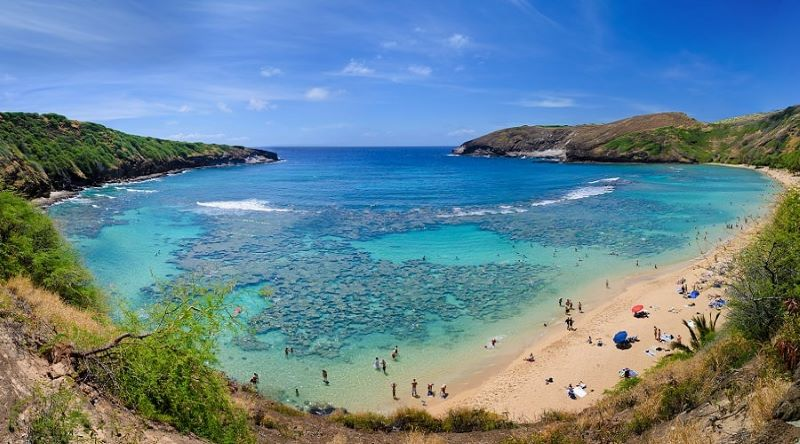
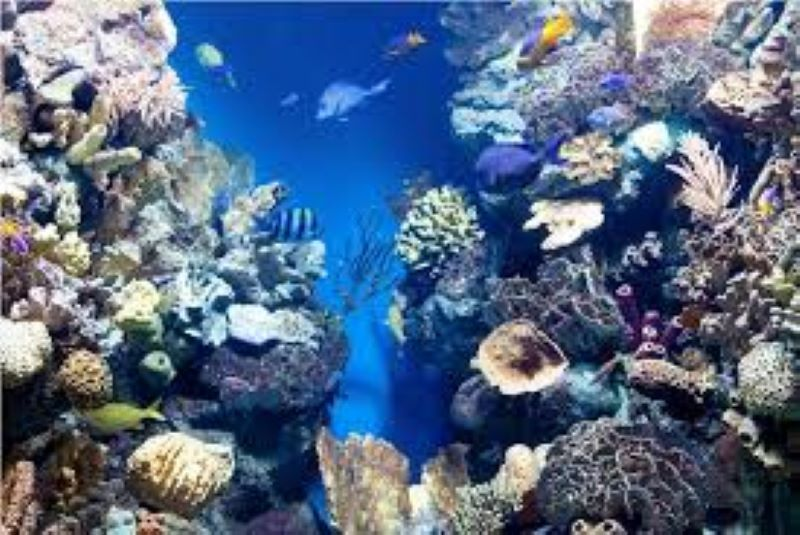
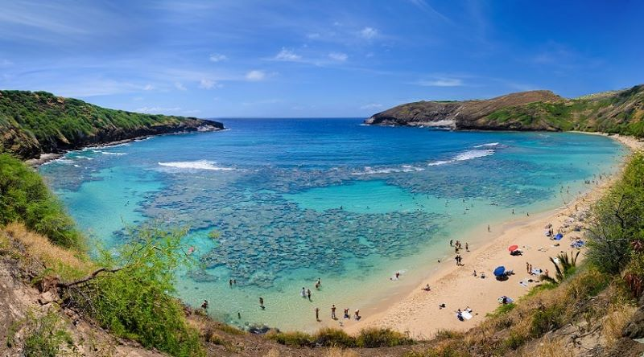
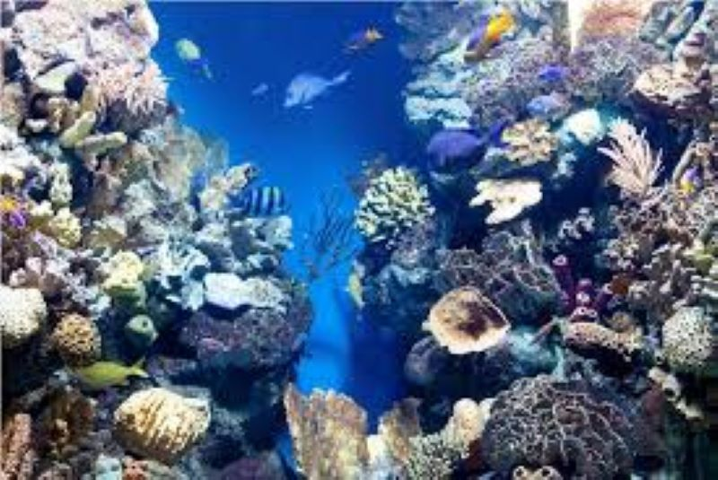

Hanauma Bay
The Nature Preserve status coincides with the Marine Life Conservation District in the area located along the beach called Hanauma Networking Site and Hanauma Bay Beach Park.
 The Nature Preserve status coincides with the Marine Life Conservation District in the area located along the beach called Hanauma Networking Site and Hanauma Bay Beach Park.
 